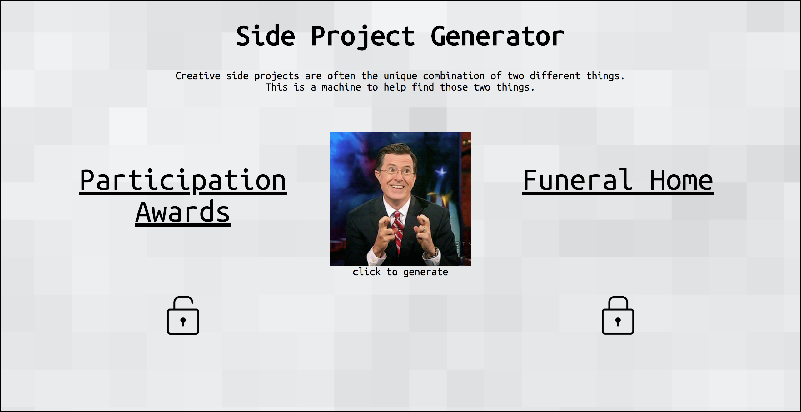
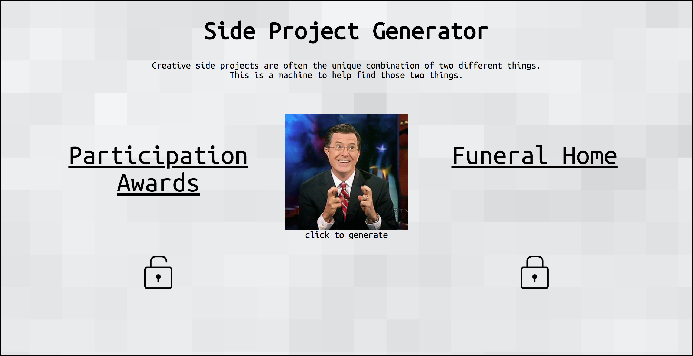

Russ Rizzo is a copywriter at Barton F. Graf in New York City. There, he's made pizza commercials for the Little Caesars HOT-N-READY , the Little Caesars ExtraMostBestest Stuffed Crust
, the Little Caesars ExtraMostBestest Stuffed Crust , and the Little Caesars Quattro
, and the Little Caesars Quattro . Prior to BFG, Russ helped create the 2017-18 campaign for the NHL's Minnesota Wild
. Prior to BFG, Russ helped create the 2017-18 campaign for the NHL's Minnesota Wild . And a VCU Brandcenter student campaign for Carmex Lip Balm
. And a VCU Brandcenter student campaign for Carmex Lip Balm . And a side project to generate ideas for side projects called Side Project Generator. And a website inspired by his father called Are you eating dinner with your father?
. And a side project to generate ideas for side projects called Side Project Generator. And a website inspired by his father called Are you eating dinner with your father? And an online game about NHL players called Game of Hands
And an online game about NHL players called Game of Hands . Russ grew up playing competitive hockey in Buffalo, New York. He's gone unselected in the NHL Draft for 11 consecutive years, and is now playing advertising in New York City. Contact him at russellmrizzo@gmail.com, or view his current info sheet.
. Russ grew up playing competitive hockey in Buffalo, New York. He's gone unselected in the NHL Draft for 11 consecutive years, and is now playing advertising in New York City. Contact him at russellmrizzo@gmail.com, or view his current info sheet.